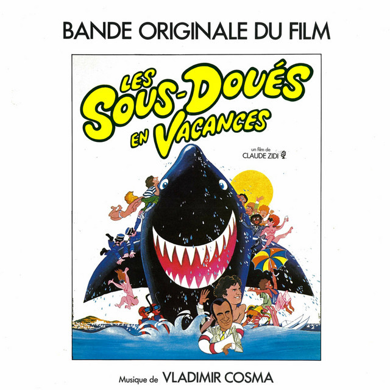
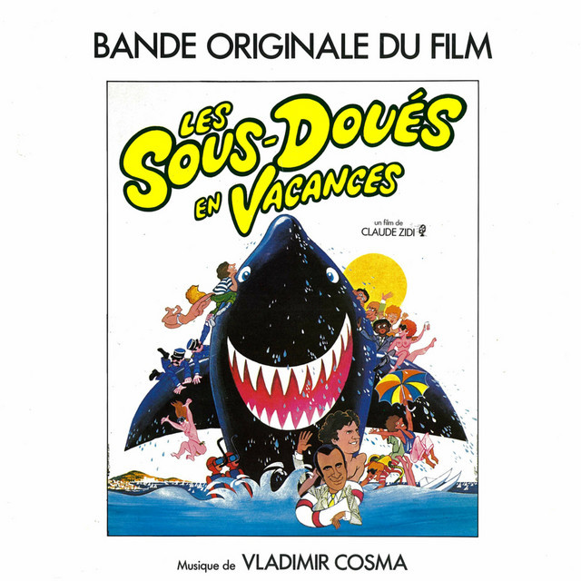

Les sous-doués en vacances
Released 1982
Musicians:
- Vladimir Cosma, Composer
- Vladimir Cosma, Writter
- Guy Marchand, Song
Les Sous-doués en vacances is a 1982 French comedic film, directed by Claude Zidi. It is the sequel to Les sous-doués (1980).The film was shot between 10 August and 3 October 1981.[1] Roland Moreno, the real life inventor of the smart card, was cast in the film as a "mad inventor" who creates a "love computer."[2]
 

Side One
- Destiné
- Les sous-doués en vacances
- Le rap des sous-doués
- B.B... Presume
Side Two
- Airport quiproquo
- Sur la pionte des pieds
- Les retrouvailles des sous-doués
- Saint-Tropez reggea
- The film was released in 1982. It was shown in PAris for 22 weeks.
- Florence Guérin recalls how she gave her first line to the cinema in this film.
- Vladimir Cosma, Composer
- Sandrine Bonnaire in an extra in the movie.